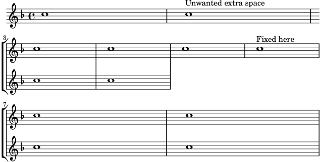

| [ << Breaks ] | [Top][Contents] | [ Connecting notes >> ] |
| [ < Breaks ] | [ Up: Breaks ] | [ Positioning segno and coda (with line break) > ] |
Adding an extra staff at a line break
When adding a new staff at a line break, some extra space is
unfortunately added at the end of the line before the break (to fit in
a key signature change, which is never printed anyway). The workaround
is to set the explicitKeySignatureVisibility property of the
Staff grob as is shown in the example.
\score { \new StaffGroup \relative c'' { \new Staff \key f \major c1 c^"Unwanted extra space" \break << { c1 | c } \new Staff { \key f \major \once \omit Staff.TimeSignature c1 | c } >> c1 | c^"Fixed here" \break << { c1 | c } \new Staff { \once \set Staff.explicitKeySignatureVisibility = #end-of-line-invisible \key f \major \once \omit Staff.TimeSignature c1 | c } >> } }

| [ << Breaks ] | [Top][Contents] | [ Connecting notes >> ] |
| [ < Breaks ] | [ Up: Breaks ] | [ Positioning segno and coda (with line break) > ] |